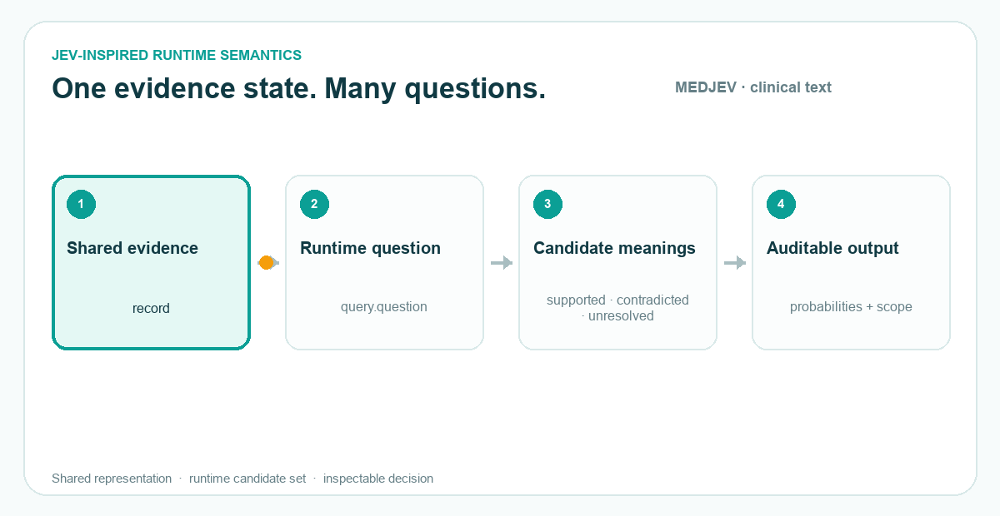

MEDJEV · JEV-INSPIRED BIOMEDICAL RESEARCH
Typed decisions for evidence.
One shared state. Parallel runtime questions. Structured answers with explicit probabilities. MEDJEV studies a JEV-inspired System One-style interface for clinical evidence, biomedical text, and sleep signals.

Shared stateClinical record, biomedical passage, or overnight PSG context.
Typed questionsChoice, Score, and Noul-style bounded questions supplied at runtime.
Auditable answersMachine-readable decisions, per-option probabilities, and explicit scope.
Documentation · JEV terminology · SLEEPJEV companion project